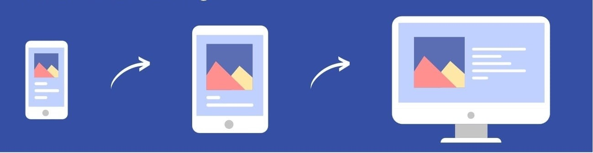
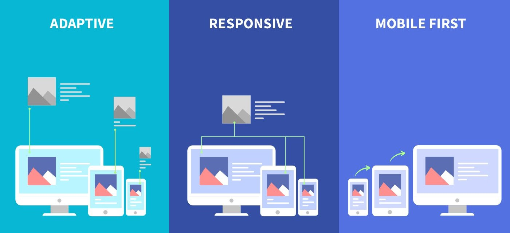
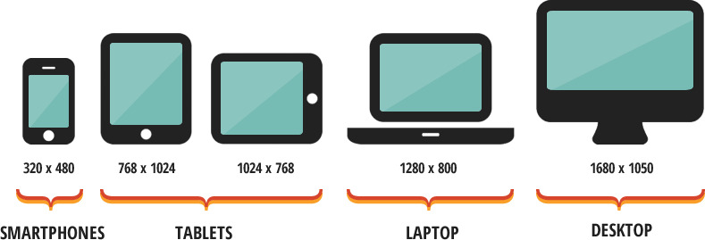
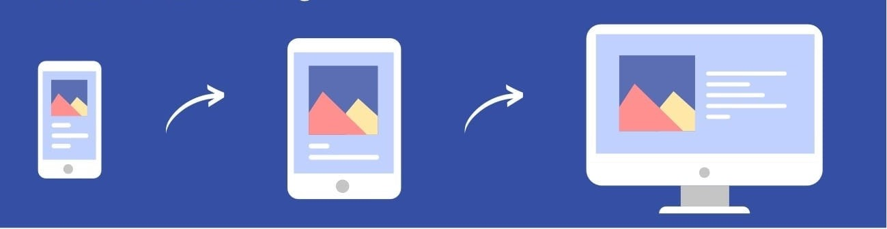
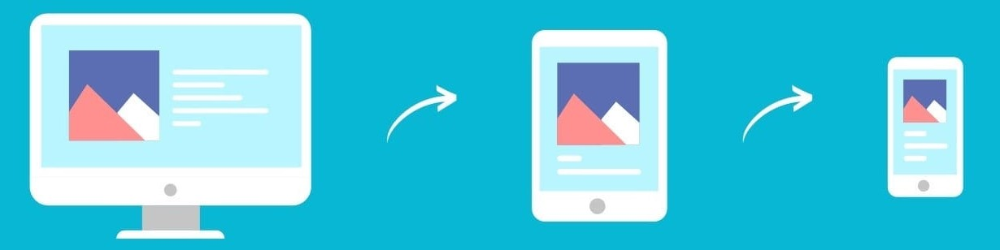

MOBILE-FIRST :
Se basa en empezar a diseñar primero por la versión móvil de un sitio web y luego ir adaptandolo en dispositivos de mayor tamaño.
El diseño web responsivo (responsive web design) es la práctica de crear sitios web que se adapten y se vean bien en una variedad de dispositivos y tamaños de pantalla.
Es el área de la pantalla de un dispositivo donde el contenido principal se muestra sin necesidad de desplazamientos, adaptándose automáticamente al tamaño y resolución del dispositivo para garantizar una experiencia visual óptima.
Se basa en empezar a diseñar primero por la versión móvil de un sitio web y luego ir adaptandolo en dispositivos de mayor tamaño.
Se basa en empezar a diseñar primero la versión para computadoras de escritorio y luego adaptarla a dispositivos móviles.

Nos permite especificar la visualización de una pagina web para diferentes medios de salida y tamaños de pantalla como; desktop, tablet, android y apple.
**El media querie para un enfoque desktop-first; consiste en "max-width".
Por ejemplo: @media (max-width: 767px){}
**El media querie para un enfoque mobile-first; consiste en "min-width".
Por ejemplo: @media (min-width: 480px){}
Los breakpoints son puntos de quiebre en el diseño responsivo donde se aplican cambios en el diseño para adaptarse a diferentes tamaños de pantalla.